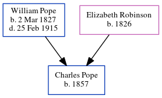

Charles Pope 1857 -
[ Home ] | [ Calendar ] | [ Surnames Index ] | [ Census Index ] | [ Family History ]The child of William Pope (a builder) and Elizabeth Robinson, Charles Pope, the second cousin three-times-removed on the father's side of Nigel Horne, was born in Folkestone, Kent, England in 18571,2.
During his life, he was living on Mill Lane in Folkestone on Apr 7, 18611; and at Fancy Street in Folkestone on Apr 2, 18712.
Parents
- William was born on Mar 2, 1827
- Elizabeth Ann was born in 1826
Citations
- 1861 England, Wales & Scotland Census - Findmypast (was age 4 and the son of the head of the household)
- 1871 England, Wales & Scotland Census - Findmypast (was age 14 and the son of the head of the household)
Media
1861 England, Wales & Scotland Census - GBC/1861/0003618430
Family Tree
Generated by ged2site. Last updated on Jun 11, 2024